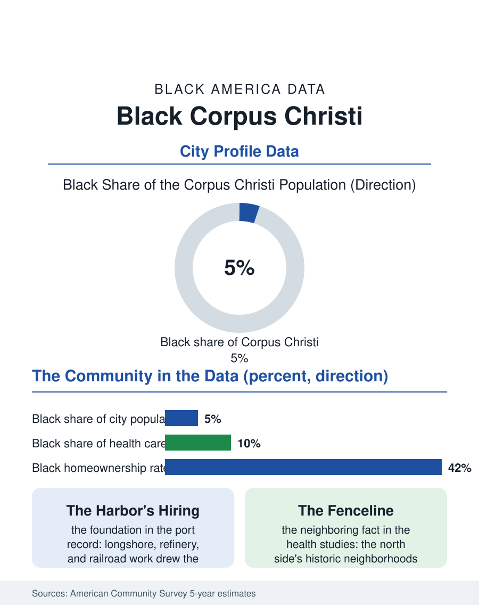

Black Cities
The Harbor City: Black Corpus Christi
A small, century-old Black community built by the port, the refineries, and the naval air station, rooted on Corpus Christi's north side. The Corpus Christi file.

Corpus Christi's Black community is one of the Gulf Coast's oldest, rooted in the port and the refineries that made this Texas city an industrial crossroads, and one of its smallest: roughly fourteen thousand Black residents, about four to five percent of a city of some three hundred twenty thousand. The American Community Survey counts a community shaped by the King High School and Solomon Coles traditions, by the naval air station, and by a century of work on the docks and in the plants. This article reads the Corpus Christi file.
A Port City's Working Community
The community's formation followed the harbor. As Corpus Christi dredged its deepwater port in the early twentieth century and the petrochemical corridor rose along the ship channel, Black workers arrived from East Texas and Louisiana for the longshore, refinery, and railroad jobs, settling on the city's north side in neighborhoods that became the community's permanent geography. The naval air station, training pilots since the Second World War, added a military stream that never stopped flowing: service members who discovered the coast, stayed, and retired into the community, giving Corpus Christi's Black population a veteran share the census data show clearly. Solomon Coles, the segregated high school named for a Black educator, produced the community's professional class for generations before integration, and its alumni network remains the city's Black civic backbone, alongside the churches of the north side and the local NAACP chapter. The economy that employs the community today mirrors the port's: health care is now the largest employer, with the hospital systems drawing Black workers in the shares the health workforce files record, followed by the school district, the port and its contractors, the refineries, and the tourism economy of the bayfront.
The Numbers in the Survey
The ACS profile shows a working community with the Texas pattern's familiar stresses. Median Black household income in the Corpus Christi area runs below the city's overall median and below the Black statewide figure, with employment concentrated in health care, education, retail, and the industrial trades. Homeownership among Black households runs lower than the Texas Black average, and the housing geography is the city's oldest story: the north side neighborhoods nearest the refinery corridor carry both the community's deepest roots and its environmental file, the fenceline exposure to the petrochemical complex that public health researchers have studied in this city for decades. The population count itself has been nearly flat across recent survey cycles, a stability that reads two ways in the data: the community is not growing the way Houston's and Dallas's are, reflecting the metro's slower overall growth, but it is also not shrinking, held by the port economy's steadiness, the military presence, and housing costs that remain within reach of working families in a way the state's larger metros no longer offer. Educational attainment tracks the pattern of other mid-size Texas cities, with the Del Mar College pipeline and the local Texas A&M campus branch anchoring the degree pathway close to home.
Institutions and the Coast
The institutional map is compact and durable. The churches of the north side, the Coles alumni association, the Divine Nine chapters at the university, and the Juneteenth and Black history programming of the public library system carry the community's organized life, while the city's Black elected representation has moved from the school board outward in the pattern this atlas records across the South. The coast itself is the community's defining asset and its defining risk: hurricane exposure is priced into every insurance bill in the housing cost data, and storm recovery, from Harvey forward, has tested the north side's resilience with the now-standard finding that recovery dollars arrive slowest where incomes are lowest. The Corpus Christi file closes on the port's next chapter. The ship channel's deepening and the energy transition investments along the corridor promise another generation of industrial employment, and the community's position, adjacent to the work, organized through its institutions, and rooted for a century, gives it a claim on that future that its modest share of the population understates. Small communities in this atlas are rarely minor ones, and the north side of Corpus Christi, which built a high school named for a Black educator into a century of leadership, is the proof the file keeps returning to.
More in Black Cities
Black Atlanta: Population, Distribution, and Growth of a Black Metropolis
Metro Atlanta holds more than two million Black residents — roughly one in three, second only to New York. The suburban distribution, migration history, and composition of Black Atlanta in the census data.
Black New York: The Largest Black Population in America
The New York metropolitan area holds about 3.4 million Black residents — more than any metro in the nation — and the city itself about two million. The census profile.
Black Washington: The District and the Metro
The Washington metro holds about 1.6 million Black residents, and the District itself — long a majority-Black city — now records a Black share near 41 percent. The census profile.
Source: U.S. Census Bureau, American Community Survey 5-year estimates for the Corpus Christi, TX metropolitan area; Texas State Historical Association community records.